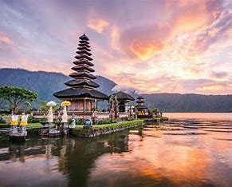

"The Enchanting Charms of Prague: A Walk Through Europe's Fairytale
City"

This blog post takes you through the cobblestone streets of Prague, a
city where history and beauty converge in every corner. Explore the
iconic Prague Castle, wander through the Old Town Square, and cross
the historic Charles Bridge as you discover the city’s rich past and
vibrant culture. With its gothic architecture, lively cafés, and
hidden courtyards, Prague offers a romantic and magical experience for
every traveler. Whether you’re captivated by history or simply in
search of a picturesque escape, Prague promises a journey you won’t
soon forget.
"Discovering the Wild Beauty of Patagonia: An Adventure to the End of
the World"
In this post, we venture into the remote and rugged landscapes of
Patagonia, a destination that calls to adventurers and nature lovers
alike. From the towering peaks of the Andes to the vast glaciers of
Los Glaciares National Park, this region of South America offers
unparalleled beauty and solitude. We’ll guide you through the best
hiking trails, wildlife viewing spots, and tips for exploring this
breathtaking wilderness. Whether you’re chasing the thrill of the
great outdoors or seeking a peaceful retreat in nature, Patagonia is a
place where the wild truly comes alive.